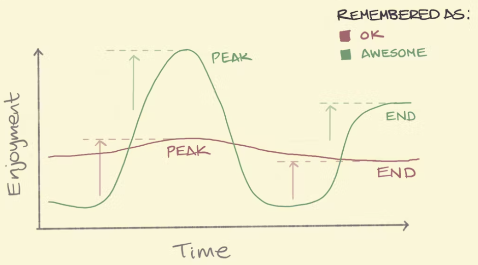
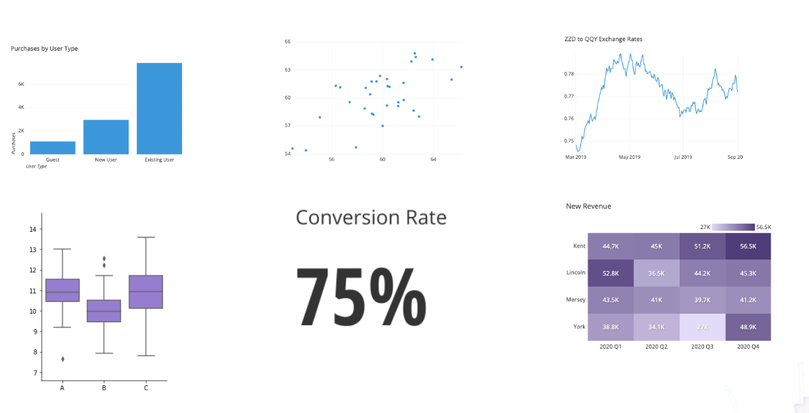

Creating, innovating and presenting
Data Storytelling + A.I.
2025-07-06
What is Storytelling?


üî• Stories are the first human technology.
Ohh, those hackable brains

Peak-End Rule

Game of Thrones Rating, by Kelvin Neo
Narrative
Use Storytelling tricks (narrative) to create presentations that will be remembered and make an impact

üé≠ Emotions inspire action
The best example

How to make millions of people share statistics on social media?

Examples
 üî¢ Don‚Äôt share numbers
üî¢ Don‚Äôt share numbers
 ü™∂ Share a story
ü™∂ Share a story
(C) Storytelling with Data, by Cole Nussbaumer Knaflic.
Best Charts for your Data


(C) Essential chart types for data visualization, por Atlassian.
Examples


ü•± 1¬∞ version \(<\) ‚Ķ \(<\) üòä last version
From Ideas to Impact… Faster with AI
- Faster structure, less effort
- Clearer stories, better impact
- Visuals in seconds
- More time for creativity

üìù Quarto (+ Extensions)
Quarto is an open system for scientific publications with markdown and interactive code (Python/R).
üîß Need more power? Use Extensions

Streamlit
Streamlit is a Python library that allows you to easily create interactive web applications using only Python code.

Streamlit

☁️ Streamlit Cloud


Learn more at: üëâ streamlit.io/cloud